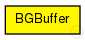
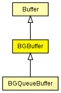

This documentation is released under the Creative Commons license
This documentation is released under the Creative Commons licenseRepresents an abstract Buffer for background traffic. Messages are sent immediatly to the LLC
WARNING: Do not instantiate the module. Use BGQueueBuffer instead!
TODO: The BGBuffer module should be converted to an interface since it should not be used directly in simulation.
See also: BGQueueBuffer, Buffer, SchedulerActionTimeEvent, TTEScheduler
Author: Till Steinbach
The following diagram shows usage relationships between types. Unresolved types are missing from the diagram. Click here to see the full picture.
The following diagram shows inheritance relationships for this type. Unresolved types are missing from the diagram. Click here to see the full picture.
| Name | Type | Description |
|---|---|---|
| Buffer | simple module |
Abstract base Buffer used for the various Buffers of TTEthernet. Since this is an abstract module please do not instantiate it |
| Name | Type | Description |
|---|---|---|
| BGQueueBuffer | simple module |
Represents a queue buffer for background traffic. Messages are sent immediatly to LLC |
| Name | Type | Default value | Description |
|---|---|---|---|
| priority | int | -1 |
Priority of the buffer (currently only used for rate-constrained traffic) |
| ct_id | int | 0 |
Critical traffic ID of the buffer |
| ct_marker | int | 0 |
Critical traffic marker of the buffer |
| ct_mask | int | 0 |
Critical traffic mask of the buffer |
| Name | Value | Description |
|---|---|---|
| display | i=block/buffer | |
| class | BGBuffer |
| Name | Direction | Size | Description |
|---|---|---|---|
| in | input |
The buffers Input |
|
| out | output |
The buffers Output WARNING: CURRENTLY NOT USED! |
| Name | Title | Source | Record | Unit | Interpolation Mode |
|---|---|---|---|---|---|
| txPk | TX Packets | count, vector | |||
| latency | End-to-end latency | stats, histogram, vector | s |
// // Represents an abstract Buffer for background traffic. Messages are sent immediatly to the LLC // // // @warning Do not instantiate the module. Use BGQueueBuffer instead! // // @todo The BGBuffer module should be converted to an interface since it should // not be used directly in simulation. // // @see BGQueueBuffer, Buffer, SchedulerActionTimeEvent, TTEScheduler // // @author Till Steinbach simple BGBuffer extends Buffer { parameters: //BGBuffer is implemented by the BGBuffer C++ Class @class(BGBuffer); }
This documentation is released under the Creative Commons license